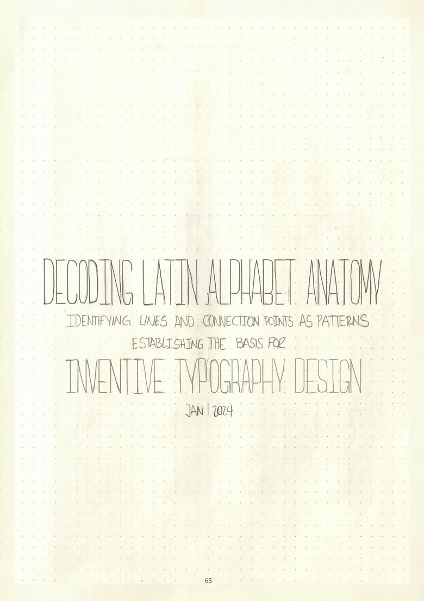
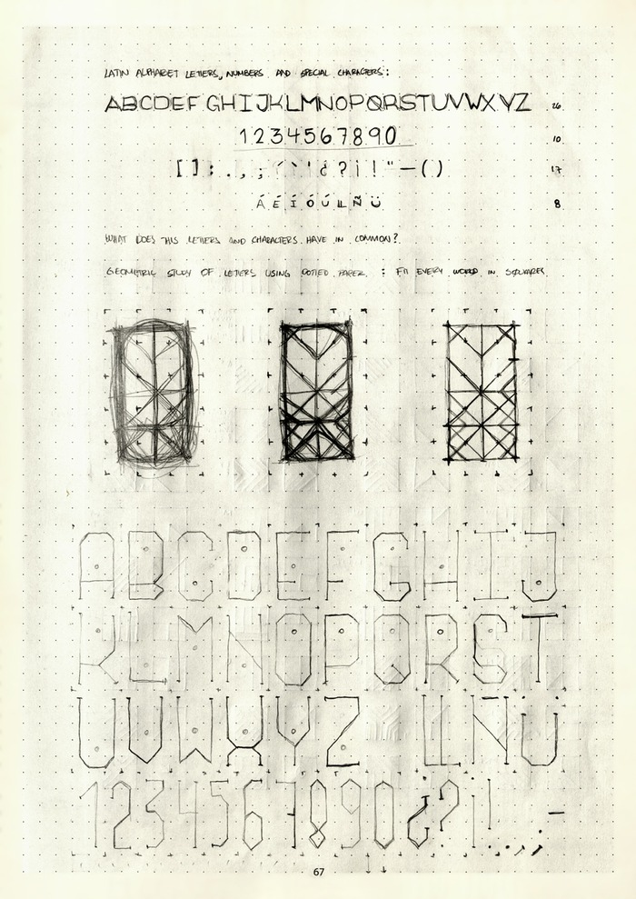
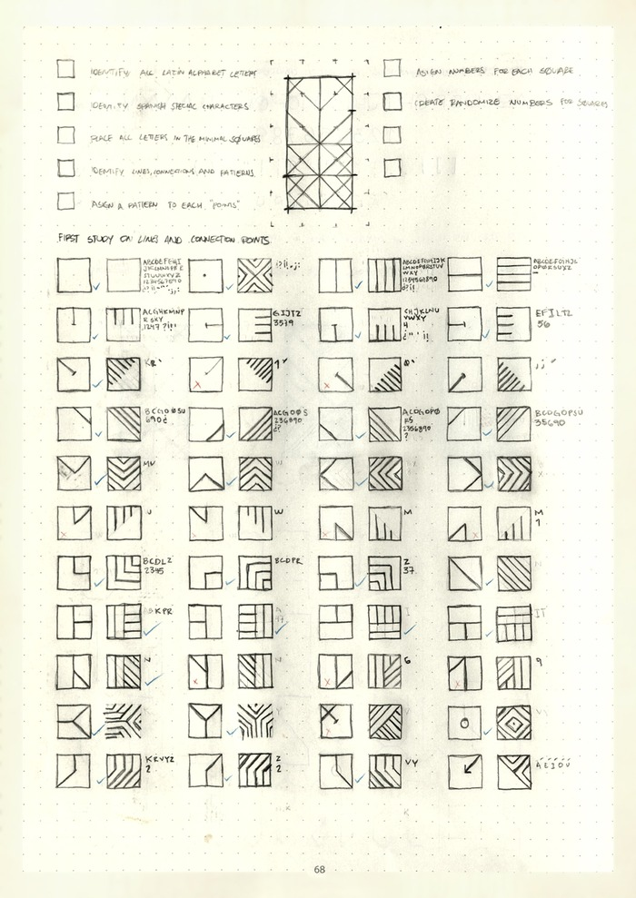
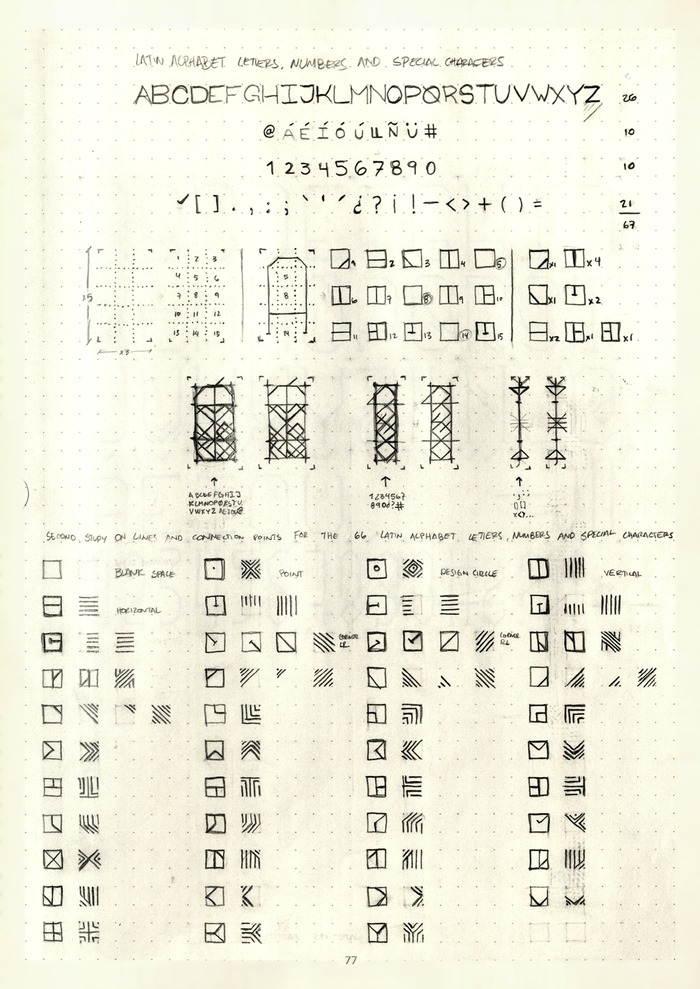
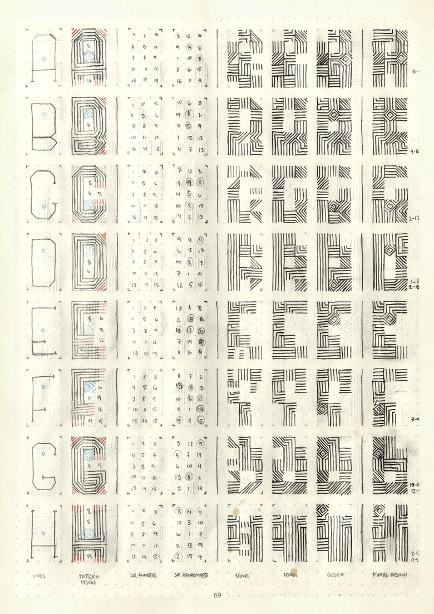
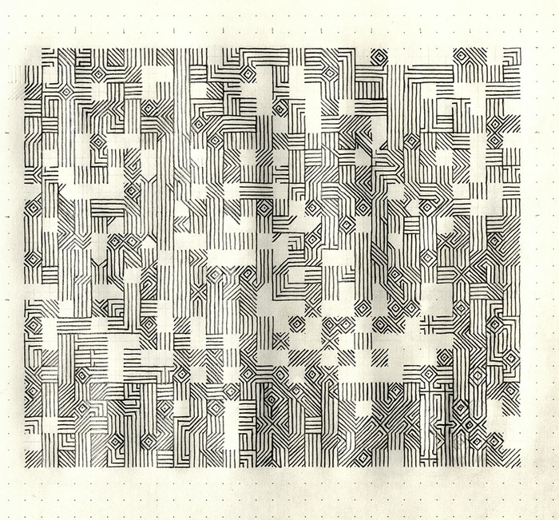
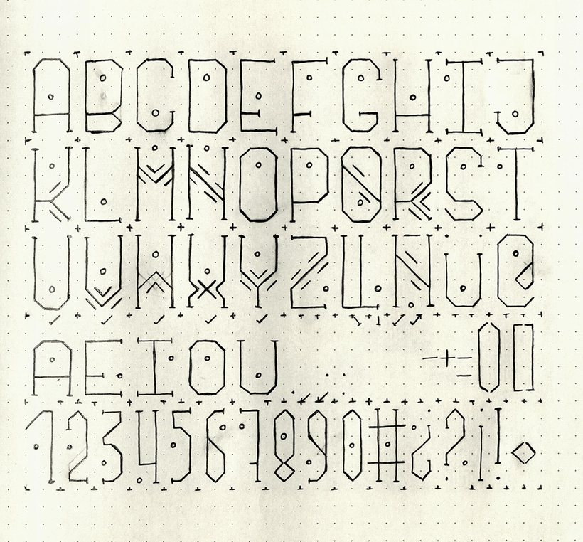

Pattern Typography
Una exploración creativa para decodificar y reconstruir la anatomía del alfabeto latino. Descompuse cada letra en sus líneas estructurales, trazos y puntos de conexión, estudiando qué hace única a cada letra y qué tiene en común todo el alfabeto, y usé ese análisis como base para un enfoque sistematizado de la tipografía: uno que convierte letras conocidas en patrón geométrico abstracto.

El primer paso fue establecer un marco consistente: una cuadrícula de 5x3 que sostuviera cada letra. Trabajando en papel punteado, mapeé el alfabeto latino, los caracteres acentuados del español, los números y la puntuación sobre esa cuadrícula, ajustando cada uno a su propio conjunto de cuadros. La cuadrícula mantuvo la proporción y el alineamiento consistentes en todo el alfabeto mientras probaba hasta dónde se podía reducir cada forma.


El objetivo era representar cada letra con la menor cantidad de líneas posible, la misma lógica detrás de los relojes digitales antiguos, que muestran números con un puñado de trazos básicos. Para llevarlo más lejos, le asigné un número del 1 al 15 a cada cuadro de la cuadrícula, y usé esa numeración para generar secuencias aleatorias que decidían qué segmentos aparecerían en cada versión de una letra. Es un método basado en reglas con un resultado impredecible: secuencias cortas, secuencias largas y un diseño final, trabajado letra por letra hasta que todo el alfabeto tuvo su propio patrón reducido.


Algunos de estos patrones de letras se expandieron en palabras y frases completas, composiciones que se leen más como código encriptado que como tipografía. Los resultados son patrones abstractos que todavía guardan una conexión con su origen tipográfico, ubicados en algún punto entre la legibilidad y el ritmo visual. Se convirtió en un nuevo lenguaje visual, uno que esconde significado a plena vista e invita a quien lo mira a tratar de decodificarlo.

Diez etapas de la misma composición, desde las letras simples hasta el patrón completamente encriptado. Andá pasando las imágenes para ver cómo se va construyendo el sistema.
